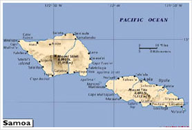

 美属萨摩亚地处太平洋波利尼西亚岛群的中南部，美国有人居住领土中唯一属于南半球的地区。首府帕果帕果是太平洋上天然良港之一。 经济主要依靠美国政府援助和金枪鱼工业。所有在美属萨摩亚出生的人都可享有美国国民的待遇，但不获美国公民的资格。这是唯一一种美国“国民但非公民”的例子。 2011年11月，迎来历史上第一场国际足球比赛胜利。[详细] 相关分类：行政区域 美国地理 殖民地 特殊政区 政治组织 旅游 参与编辑：XXSD 诚心 柳溪 天之魂 上海抢包山 相关词条：萨摩亚群岛 萨摩亚 殖民地 帕果帕果 波利尼西亚 国际足联